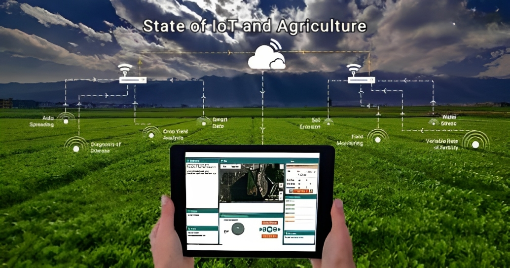

"Akıllı Tarımın Gücü: IoT ve LoRaWAN ile Yapay Zeka Entegrasyonu"
Projemizde, modern tarımı şekillendiren IoT ve LoRaWAN teknolojilerini kullanarak bitkilerin su ihtiyacını doğru
ölçümleyen yapay zeka çözümleri geliştirdik.
Faydalarımız:
"Verimlilik Artışı ve Sürdürülebilir Tarımın Anahtarı"
Projemiz, su tasarrufu ve otomasyonun sağladığı verimlilik artışı ile çiftçilerin karlılığını artırıyor ve su
kaynaklarının sürdürülebilir kullanımına katkı sağlıyor.
Neden Biz?
"Tarımı Daha Akıllı ve Verimli Hale Getiriyoruz"
Projemiz, tarım sektöründeki teknolojik açığı kapatmayı amaçlıyor. Çiftçilerin daha az çaba harcayarak daha
fazla üretim yapmalarına olanak tanıyoruz.
Nasıl Çalışıyoruz:
Nasıl Çalışıyoruz:
"Bitkilerinizi En İyi Şekilde Suluyoruz"
Yapay zeka tabanlı sensörlerimiz, bitkilerin ihtiyacına göre suyunu ayarlar ve sulama işlemini otomatikleştirir.
Çiftçiler, verimlilik artışını kolayca gözlemleyebilir.
Uzaktan Kontrol:
"Tarımı Her Yerden Yönetin"
Uzaktan izleme ve kontrol özelliğimiz sayesinde çiftçiler, tarım arazilerini her yerden yönetebilirler. Esneklik
ve kolaylık sunuyoruz.
Çevresel Duyarlılık:
"Suları ve Toprağı Koruyarak Geleceğe Yatırım Yapın"
Projemiz, su kaynaklarının verimli kullanımını teşvik ederek çevresel sürdürülebilirliğe katkı sağlar. Gelecek
nesiller için temiz su ve sağlıklı topraklar bırakmak istiyoruz.

İletişim ve Destek
İletişim ve Destek:
"Soru Sormaktan Çekinmeyin"
Projemiz hakkında daha fazla bilgi almak veya destek olmak isterseniz, iletişim bilgilerimizi kullanarak bizimle
iletişime geçin.
Referanslar:
"Başarılı Projelerimizi Keşfedin"
Daha önce gerçekleştirdiğimiz başarılı tarım projelerine göz atın ve nasıl fayda sağladığımızı inceleyin.
Hakkımızda:
"Teknoloji ve Tarım Tutkumuzla Sizlerleyiz"
Ekip üyelerimizin ve projenin arkasındaki hikayeyi öğrenin. Tarım ve teknolojiye olan tutkumuzla nasıl
çalıştığımızı keşfedin.
Web Sitesini Gezin:
"Projemizi Detaylıca Keşfedin"
Bu web sitesi, tarım sektöründeki su kaynaklarını korumayı ve tarımsal verimliliği artırmayı amaçlayan projemizi
detaylı bir şekilde anlatıyor. Teknolojimizi yakından keşfedin.
Bu yazı önerileri, projenizin ana hatlarını ve önemli faydalarını vurgulayarak web sitesi ziyaretçilerine bilgi
verici ve etkili bir şekilde sunmanıza yardımcı olabilir.